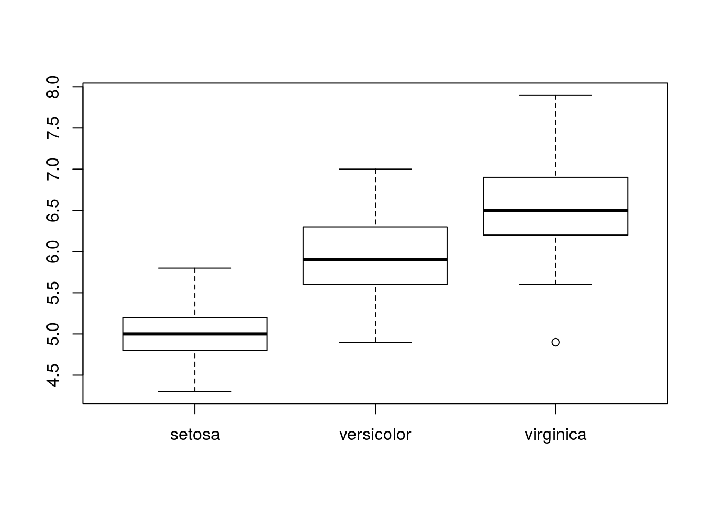

RとRStudioに触れてみよう
R(RStudio)の起動
基本、RStudioを起動すればOKです。早速起動させましょう。
RStudioの画面
RStudioは主に4つの部分(pane)に分かれています:

左下: Console
Rを対話的に操作するところです。コマンドを記述して実行します。Rに対して「これをやれ」と指示を出し、その結果もまたここに出てきます。
左上: Source Editor
Rのスクリプトやファイルなどを編集する場所です。ここで各種ファイルを開き、コードを編集して保存したり、そのコードを実行します。ここでコードを実行すると、その内容がConsoleへ順次送られて実行されます。
通常、ここでRスクリプトファイル(*.R)を作成して、それを実行して作業をしていきます。よって、おそらくは多くの場合ここが一番利用するところとなるでしょう。
右下: File, Plots, Packages, Helpなど

File
ディレクトリ(フォルダ)にアクセスします。各ファイルをクリックするとその場で開くことができます。また名前の変更やディレクトリ作成などもできます。
Plots
グラフなどを出力すると、ここに表示されます。ある程度遡れますし、ここから画像などにエクスポートすることもできます。
Packages
Rの拡張パッケージを管理できます。Rはパッケージがポイントになるので、頻繁に利用します。「パッケージとは何か」については後述します。
Help
ヘルプウィンドウで、Rの関数などを検索したり、その組み込みのヘルプを閲覧することができます。ただあまりここから検索することは少なく、Consoleで ?help というようにしてヘルプを表示させるのがメインです
右上: Environment, Historyなど

Environment
Rの環境を表示します。とりあえずは「今Rで読み込んだり作ったりしてるデータや変数といったものが見れる」と考えておいてください。
History
Consoleで実行した内容の履歴です。ここから再度Consoleに送ったり、Scriptに送ったりすることもできます。
まずはとにかく触ってみよう
まず、Rを使うとどんな感じになるのか、試しに触ってみましょう。それぞれの解説については後述します。
データの読み込み
Rでデータを読みこませる場合、csvファイルからが一般的です。ここでは、“iris-data.csv”というファイルを読み込みます。
Consoleで以下を入力してEnterで実行しましょう:
iris.data <- read.csv("iris-data.csv")これでデータが読み込まれます。RStudio右上のEnvironmentのところに、iris.dataというのが出てきているはずです。
データ構造を確認
Environmentのところにあるiris.dataをクリックすると、そのデータセットを見ることができます。
また、Consoleで以下のコードを入力してEnterで実行しましょう:
str(iris.data)## 'data.frame': 150 obs. of 5 variables:
## $ Sepal.Length: num 5.1 4.9 4.7 4.6 5 5.4 4.6 5 4.4 4.9 ...
## $ Sepal.Width : num 3.5 3 3.2 3.1 3.6 3.9 3.4 3.4 2.9 3.1 ...
## $ Petal.Length: num 1.4 1.4 1.3 1.5 1.4 1.7 1.4 1.5 1.4 1.5 ...
## $ Petal.Width : num 0.2 0.2 0.2 0.2 0.2 0.4 0.3 0.2 0.2 0.1 ...
## $ Species : Factor w/ 3 levels "setosa","versicolor",..: 1 1 1 1 1 1 1 1 1 1 ...iris.dataとして読み込んだデータの内容が表示されます。細かいところは省略しますが、大体はつかめるかと思います。
集計
それでは、現在Rにあるiris.dataというデータセットについて、平均や中央値、最大最小など集計してみましょう。Consoleで以下のコードを入力して実行してください:
summary(iris.data)## Sepal.Length Sepal.Width Petal.Length Petal.Width
## Min. :4.300 Min. :2.000 Min. :1.000 Min. :0.100
## 1st Qu.:5.100 1st Qu.:2.800 1st Qu.:1.600 1st Qu.:0.300
## Median :5.800 Median :3.000 Median :4.350 Median :1.300
## Mean :5.843 Mean :3.057 Mean :3.758 Mean :1.199
## 3rd Qu.:6.400 3rd Qu.:3.300 3rd Qu.:5.100 3rd Qu.:1.800
## Max. :7.900 Max. :4.400 Max. :6.900 Max. :2.500
## Species
## setosa :50
## versicolor:50
## virginica :50
##
##
## 各変数の基礎統計が算出され、表示されたかと思います。
分析
それでは、Speciesを独立変数、Sepal.Lengthを従属変数とする1要因3水準の分散分析を実施してみます:
result <- aov(Sepal.Length ~ Species, data = iris.data)これで分散分析の結果がresultに入ってます。ではこの結果の分散分析表を確認します:
summary(result)## Df Sum Sq Mean Sq F value Pr(>F)
## Species 2 63.21 31.606 119.3 <2e-16 ***
## Residuals 147 38.96 0.265
## ---
## Signif. codes: 0 '***' 0.001 '**' 0.01 '*' 0.05 '.' 0.1 ' ' 1それではこれを多重比較してみます。まずはholmで:
pairwise.t.test(iris.data$Sepal.Length, iris.data$Species)##
## Pairwise comparisons using t tests with pooled SD
##
## data: iris.data$Sepal.Length and iris.data$Species
##
## setosa versicolor
## versicolor 1.8e-15 -
## virginica < 2e-16 2.8e-09
##
## P value adjustment method: holm次にTukeyのHSDで:
TukeyHSD(result)## Tukey multiple comparisons of means
## 95% family-wise confidence level
##
## Fit: aov(formula = Sepal.Length ~ Species, data = iris.data)
##
## $Species
## diff lwr upr p adj
## versicolor-setosa 0.930 0.6862273 1.1737727 0
## virginica-setosa 1.582 1.3382273 1.8257727 0
## virginica-versicolor 0.652 0.4082273 0.8957727 0図示
これらの結果を図示します。まずは各水準ごとで要約統計量算出:
by(iris.data$Sepal.Length, iris.data$Species, summary)## iris.data$Species: setosa
## Min. 1st Qu. Median Mean 3rd Qu. Max.
## 4.300 4.800 5.000 5.006 5.200 5.800
## --------------------------------------------------------
## iris.data$Species: versicolor
## Min. 1st Qu. Median Mean 3rd Qu. Max.
## 4.900 5.600 5.900 5.936 6.300 7.000
## --------------------------------------------------------
## iris.data$Species: virginica
## Min. 1st Qu. Median Mean 3rd Qu. Max.
## 4.900 6.225 6.500 6.588 6.900 7.900これを箱ひげ図でプロット:
plot(iris.data$Species, iris.data$Sepal.Length)
分析の流れ
結局のところ、分析の流れは以下のようになるかと思います。
- データの作成
- 入力など
- データの読み込み
- 何らかのファイルなどからRに読み込む
- データの整形
- 不適切なデータの除去、計算項目など
- データの集計
- データの要約、可視化など
- データの分析
- それぞれの分析の実行
- 結果の可視化
- Plotする
この資料も、この流れを意識して作成しています。